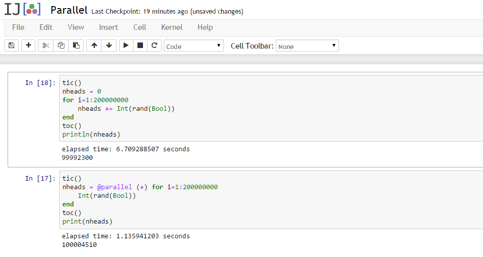

What is "functional programming"?

Clojure Impure, Functional, Dynamically typed
Haskell Pure, Functional, Static typed
Julia Dynamic, Performance oriented
Initial version with simple collection.
(filter
even?
(range 1 10))Extending search on infinity sequence.
(take 10
(filter
even?
(iterate inc 1)))The take command executes the even? and iterate.
(->> 101
(iterate inc)
(filter even?)
; Filter for numbers having `modulo 5 = 0`
(filter
(fn [x] (= 0 (mod x 5))))
; increase numbers with one
(map inc)
(take 10)
(reduce +))
; result= 1560(defn lazy-test []
(map (fn [val]
(print " Value:" val)
(* 2 val))
[1 2 3 4]))lazy-test returns doubled values. It prints also the
original values (side effect).
user=> (lazy-test)
Value: 1 Value: 2 Value: 3 Value: 4
(2 4 6 8)
user=>We just want to return with true after processing.
(defn lazy-test []
(map (fn [val]
(println "Value:" val)
(* 2 val))
[1 2 3 4])
true)user=> (lazy-test)
true
user=>(defn long-running-job [n]
(Thread/sleep 3001) ; wait for 3 seconds
(+ n 10))
(time (doall (map long-running-job (range 4))))
; "Elapsed time: 11999.235098 msecs"
(10 11 12 13)
(time (doall (pmap long-running-job (range 4))))
; "Elapsed time: 3200.001117 msecs"
(10 11 12 13)
ghci> [x*2 | x <- [1..10]]
[2,4,6,8,10,12,14,16,18,20]All right angle triangle within perimeter 50
ghci> [ (a,b,c) | c <- [1..50], b <- [1..c], a <- [1..b],
a^2 + b^2 == c^2, a + b + c <= 50 ]
[(3,4,5),(6,8,10),(5,12,13),(9,12,15),(8,15,17),(12,16,20)]Implementation of sum
sum' :: (Num a) => [a] -> a
sum' [] = 0
sum' (x:xs) = x + sum' xsSum of integers between 1 and 10
*Main> sum' [1..10]
55bmiTell :: (RealFloat a) => a -> a -> String
bmiTell weight height
| bmi <= skinny = "You're underweight"
| bmi <= normal = "You're supposedly normal."
| bmi <= fat = "You're fat!"
| otherwise = "You're a whale"
where bmi = weight / height ^ 2
skinny = 18.5
normal = 25.0
fat = 30.0Fibonacci numbers:
fib = 0:scanl (+) 1 fibFirst ten fibonacci numbers
ghci> take 10 fib
[0,1,1,2,3,5,8,13,21,34]The world is betting on LLVM:
Julia generates native machine code, directly, the first time a function is run (MCJIT).
julia> code_native(+, (Float64, Float64))
Warning: Unable to find function pointer
ERROR: no method found for the specified argument types
in code_native at reflection.jl:159
julia> 1.0 + 2.0
3.0
julia> code_native(+, (Float64, Float64))
.text
Filename: float.jl
Source line: 120
push RBP
mov RBP, RSP
Source line: 120
addsd XMM0, XMM1
pop RBP
retcall python's math.sin and julia sin:
using pycall
@pyimport math
math.sin(math.pi / 4) - sin(pi / 4) # returns 0.0call scipy or numpy works as well:
@pyimport scipy.optimize as so
so.newton(x -> cos(x) - x, 1)
@pyimport numpy.random as nr
nr.rand(3,4)julia> t = ccall( (:clock, "libc"), Int32, ())
2292761function getenv(var::AbstractString)
val = ccall((:getenv, "libc"),
Ptr{UInt8}, (Ptr{UInt8},), var)
if val == C_NULL
error("getenv: undefined variable: ", var)
end
bytestring(val)
end
FP like pipelining:
julia> [1:5;] |> x->x.^2 |> sum |> inv
0.01818181818181818